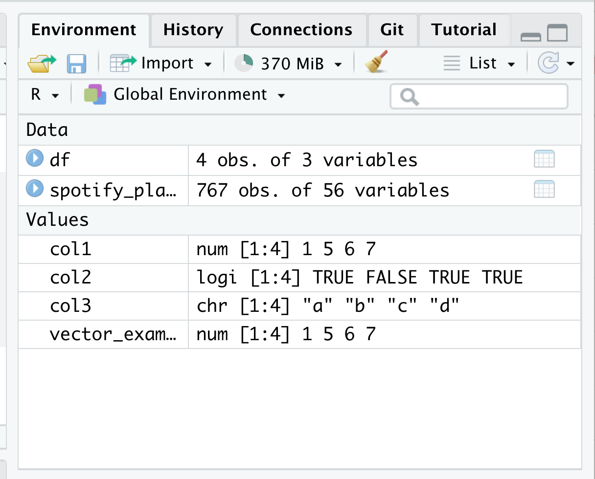

vector_example <- c(1, 5, 6, 7)
vector_example[1] 1 5 6 7vector_example[2][1] 5SDS 192: Introduction to Data Science
Professor Lindsay Poirier
RR FunctionsR OperatorsR FunctionsR is case-sensitive. df is different than DFRR understands values to be of a certain type:
c() (shorthand for combine)<- symbol assigns a value to a variable
Variable names should be descriptive! Poor or confusing variables names include:
a anddata1: Be descriptive!
student.test.scores: Avoid periods!
student test scores: Use separator characters!
3rd_test: Variables can’t start with numbers!
This course: snake case (lower case with words separated by underscores)
What kind of object is this in R? What is its type?
What would happen if I were to do the following in R?
R?Objects in R will be listed in the Environment tab in the upper right hand corner of RStudio.
Removing unnecessary objects from the environment can free up space!

R?FUNCTION_NAME in to the Console loads info about that function?round()
Convert the following variable name into something descriptive in snake case
a <- round(pi, digits = 2)
Run the code in your Console. How can we find this variable in RStudio once we run this code?
Rclass() returns the class of the values in a vectorlength() returns the number of values in a vectoris.na() for each value, returns whether the value is an NA valuesum() returns the sum of the values in a vectormax() returns the maximum value in a vectorrank() returns the ranking of a value in a vectorunique() returns the unique values of a vectorHow would I find the sum of the third column in this data frame, which I have named df?
col1 col2 col3
1 1 2 3
2 5 4 6
3 7 6 9View(): Opens a tab to view the data frame as a tablehead(): returns first six rows of datasetnames(): returns the dataset’s column namesnrow(): returns the number of rows in the datasetncol(): returns the number of columns in the datasetR.RRR+, -, *, /, ^<, <=, <, <=, ==, !=& (AND), | (OR), ! (NOT)RSymbol is |> (old version is %>%)
Functions are nested as arguments in R
length(unique(df$col1))
Perform the innermost function to the outermost
Functions are sequenced in R
df$col1 |> unique() |> length()
Take this data object, and then perform this function, and then perform this function
R FunctionsNA in RWe can use na.rm = TRUE to ignore NA values in math functions.
You won’t be able to complete Friday’s lab if this is not complete, so be sure to give yourself enough time if issues come up. I have office hours on Friday before class.